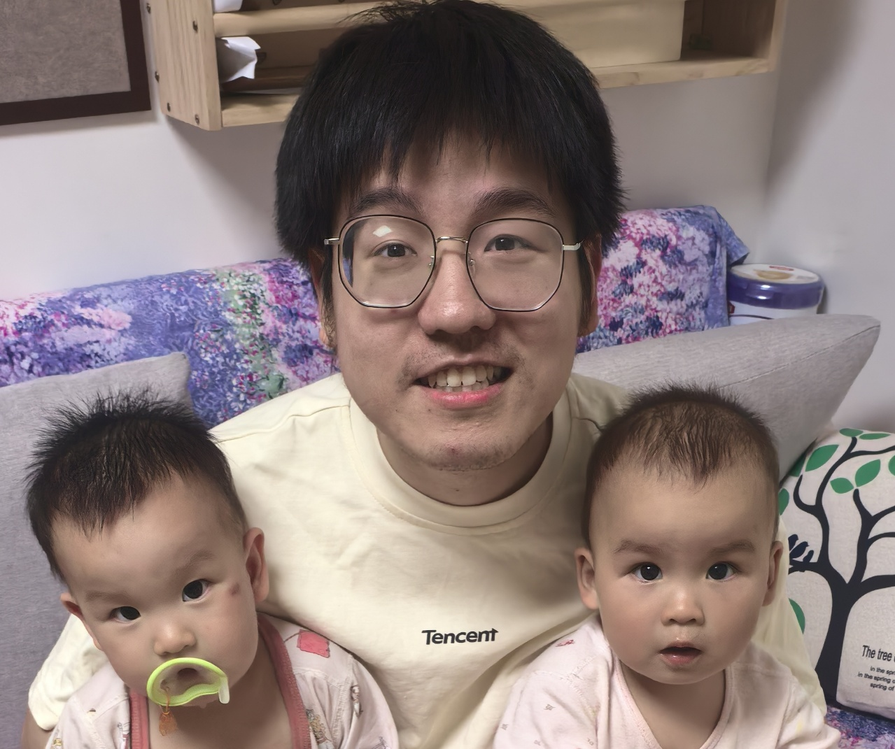
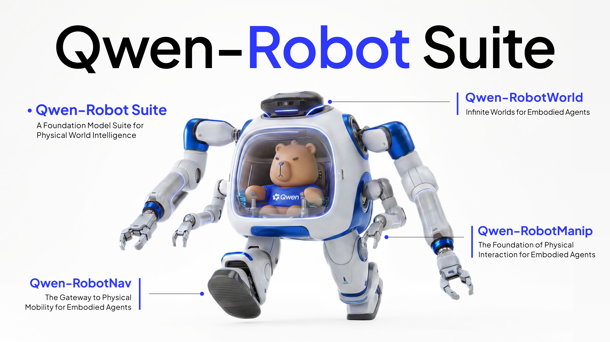
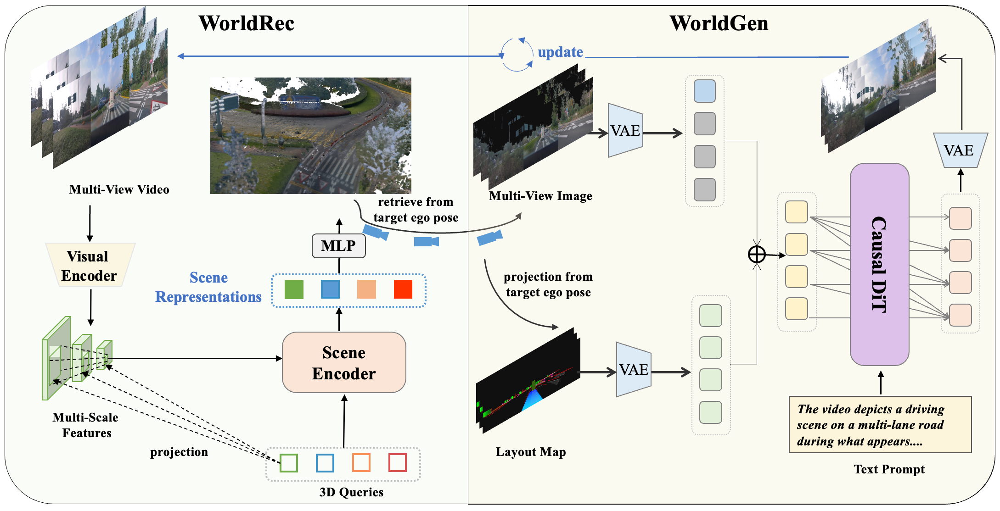
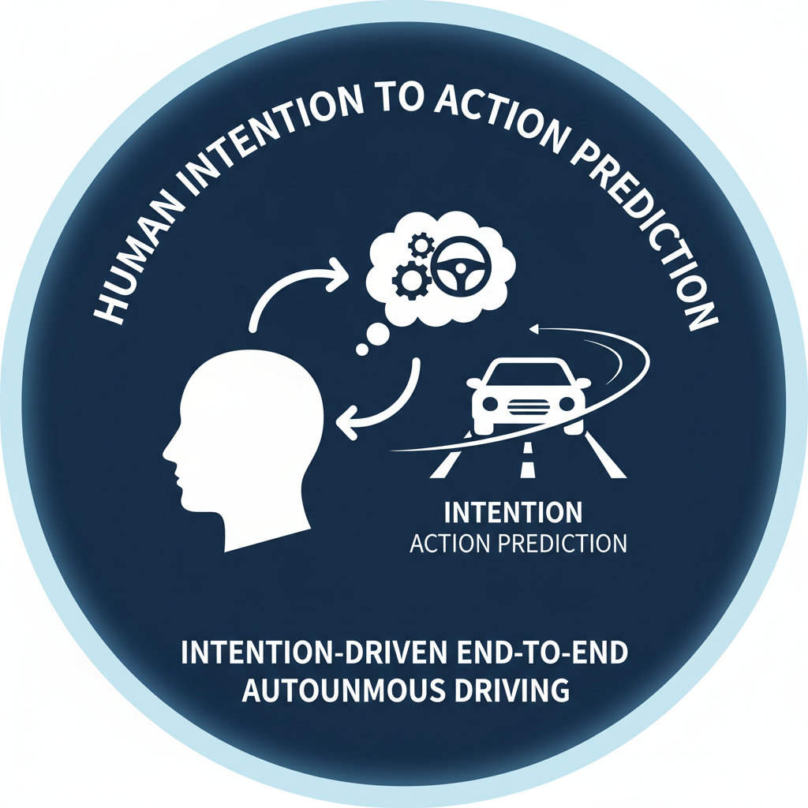
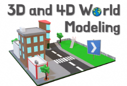
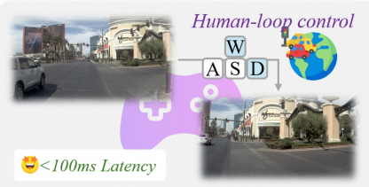
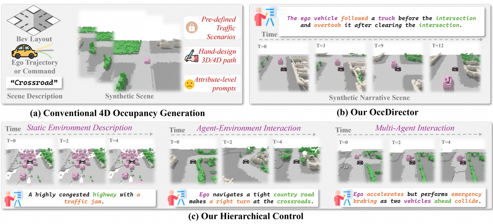
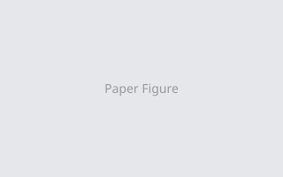
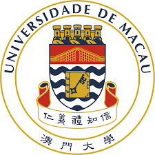

Tianyi Yan
IOTSC, University of Macau · Macau / Beijing
I am a Ph.D. student at the State Key Laboratory of Internet of Things for Smart City (SKL-IOTSC), University of Macau, advised by Prof. Jianbing Shen and Prof. Chengzhong Xu. Previously, I obtained my Master's degree from the Institute of Automation, Chinese Academy of Sciences (CASIA), working with Prof. Jinqiao Wang and Prof. Ming Tang, and my B.Eng. degree from BUPT, working with Prof. Chuan Shi. I have also gained industrial experience at Alibaba Qwen, Xiaomi EV, and Li Auto as a research intern.
My research lies at the intersection of Generative World Models, End-to-End Autonomous Driving, Embodied AI, and LLM Post-Training / Evaluation. Currently, my primary focus is on enabling agents to achieve infinite self-play within physically reliable, imaginative world models, as well as advancing LLM evaluation and post-training methodologies.
News
- 2026.06 Four papers (4/4) are accepted by ECCV 2026! Congratulations to my co-authors. See u in Malmö!
- 2026.06 Released Qwen-RobotSuite at Alibaba Qwen — a full stack for embodied intelligence with three foundation models!
- 2026.05 Xiaomi Auto World Model technical report released — joint reconstruction & generation for autonomous driving!
- 2026.02 Two papers WorldLens and AD-R1 are accepted by CVPR 2026! See u in DENVER!
- 2025.09 One paper RLGF is accepted by NeurIPS 2025! See u in SAN DIEGO!
- 2025.07 One paper is accepted by ACM MM 2025!
- 2025.06 One paper is accepted by ICCV 2025!
- 2025.02 One paper DrivingSphere is accepted by CVPR 2025! See u in NASHVILLE!
Industry Projects & Reports

Qwen-RobotSuite: A Full Stack for Embodied Intelligence
Alibaba Qwen Blog, 2026.06
Three foundation models — RobotNav, RobotManip, and RobotWorld — covering navigation, manipulation, and video world modeling across 20+ embodiments.

Xiaomi Auto World Model: A Joint World Model Integrating Reconstruction and Generation for Autonomous Driving
Technical Report, 2026.05
A unified system for autonomous driving world models: WorldRec for 3D Gaussian reconstruction and WorldGen for causal video generation in 4 denoising steps.
Publications
Selected Preprints

From Human Intention to Action Prediction: Intention-Driven End-to-End Autonomous Driving
arXiv 2026

Selected Papers


OccDirector: Language-Guided Behavior and Interaction Generation in 4D Occupancy Space
ECCV 2026


AD-R1: Closed-Loop Reinforcement Learning for End-to-End Autonomous Driving with Impartial World Models
CVPR 2026, findings

RLGF: Reinforcement Learning with Geometric Feedback for Autonomous Driving Video Generation
NeurIPS 2025


Experience
Education

Ph.D. Student
University of Macau — SKL-IOTSC
2023 – Present
M.S. in Pattern Recognition
Institute of Automation, Chinese Academy of Sciences
2020 – 2023
B.Eng. in Computer Science
Beijing University of Posts and Telecommunications
2016 – 2020
Industrial Experience
Research Intern
Alibaba Group — Tongyi Lab (Qwen)
2026.3 – Present
Research Intern
Xiaomi EV
2025.12 – 2026.3
Research Intern
Li Auto
2023 – 2025.11